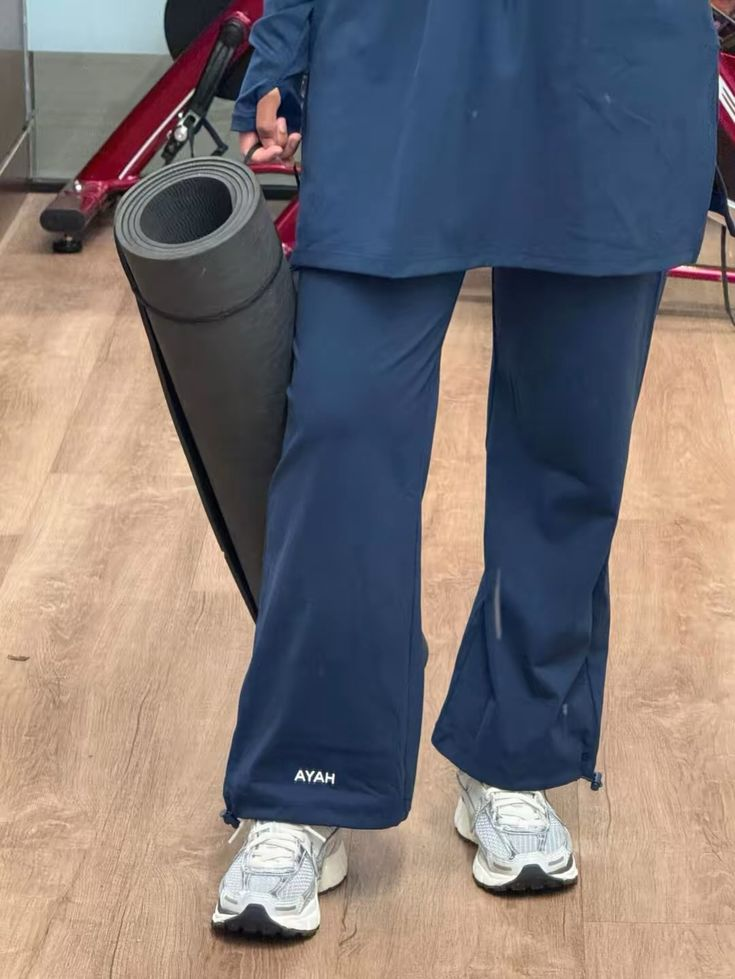

01 / MOVEMENT
Stronger, wherever you are.
A personalized training program for your home, gym, or outdoor space. Adapted to your experience, equipment, and schedule.
Build strength with bodyweight, bands, or the equipment you already have. Short sessions can fit into busy days.